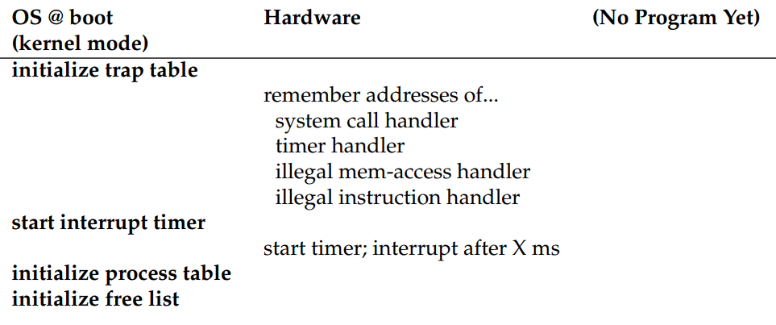
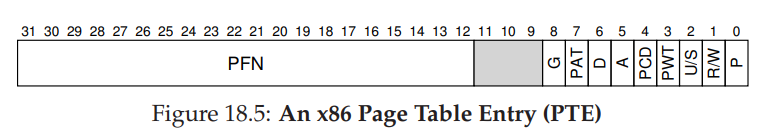

Notes for OSTEP
Operating Systems: Three Easy Pieces
Notes - Part Three
Links to the book: http://pages.cs.wisc.edu/~remzi/OSTEP/
Memory Virtualization
Abstraction: Address Space
While saving and restoring register-level state is relatively fast, saving the entire contents of memory to disk is brutally non-performant. Thus, we’d rather do is leave processes in memory while switching between them, allowing the OS to implement time sharing efficiently. As new demands (isolation / protection) were placed on the operating system, we need to create an easy to use abstraction of physical memory. We call this abstraction the address space.
The address space of a process contains all of the memory state of the running program.
- code of the program have to live in memory somewhere
- while it is running, uses a stack to keep track of where it is in the function call chain as well as to allocate local variables and pass parameters and return values to and from routines.
- heap is used for dynamically-allocated, user-managed memory.
However, this placement of stack and heap is just a convention; you could arrange the address space in a different way if you’d like; as we will see later, when multiple threads co-exist in an address space, no nice way to divide the address space like this works anymore.
Goal
-
Transparency.
The OS should implement virtual memory in a way that is invisible to the running program.
-
Efficiency
Make the virtualization as efficient as possible both in terms of time and space.
-
Protection
The OS should make sure to protect process from one another as well as the OS itself from processes.
Memory API
Underlying OS Support
The malloc library manages space within your virtual address space, but itself is built on top of some system calls which call into the OS to ask for more memory or release some back to system.
-
brkUsed to change the location of the program’s break: the location of the end of the heap.
It takes one argument (the address of the new break), and thus either increases or decreases the size of the heap based on whether the new break is larger or smaller than the current break
-
mmapObtain memory from the operating system via the
mmap()callIt can create an anonymous memory region within your program - a region which is not associated with any particular file but rather with swap space. This memory can then also be treated like a heap
Mechanism: Address Translation
- Efficiency dictates that we make use of hardware support, which at first will be quiet rudimentary (e.g. just a few registers) but will grow to be fairly complex (e.g. TLBs, page-table support, and so forth).
- Control implies that the OS ensures that no application is allowed to access any memory but its own; thus, to protect applications from one another, and the OS from applications, we will need help from the hardware.
With hardware-based address translation, the hardware transform each memory access, changing the virtual address provided by the instruction to a physical address where the desired information is actually located.
But the hardware just provides the low-level mechanism for virtualize memory efficiently. The OS must get involved at key point to set up hardware so that the correct translation take place; it must manage memory, keeping track of which locations are free and which are in use, and judiciously intervening to maintain control over how memory is used.
Assumptions
- The user’s address space must be place contiguously in physical memory.
- It is less than the size of physical memory.
- Each address space is exactly the same size.
Dynamic (Hardware-based) Relocation
Two hardware registers within each CPU: one is called the base register, and the other the bounds/limit register. Sometimes people call the part of the processor that helps with address translation the memory management unit (MMU).
- A small aside about bound register, which can be defined in one of two ways
- It holds the size of the address space and thus the hardware checks the virtual address against it first before adding the base
- It holds the physical address of the end of the address space, and thus the hardware first adds the base and then makes sure the address is within bounds.
Each memory reference generated by the process is a virtual address, the hardware in turn adds the contents of the base register to this address and the result is a physical address that can be issued to the memory system.
Hardware support
| Hardware Requirements | Notes |
|---|---|
| Privileged mode | Needed to prevent user-mode processes from executing privileged operations |
| Base/bounds registers | Need pair of register per CPU to support address translation and bounds checks |
| Ability to translate virtual addresses and check if within bounds | Circuitry to do translations and check limits; in this case, quiet simple |
| Privileged instruction to update base/bounds | OS must be able to set these values before letting a user program run |
| Privileged instruction to register exception handlers | OS must be able to tell hardware what code to run if exception occurs |
| Ability to raise exceptions | When processes try to access privileged instructions or out-of-bounds memory |
OS support
| OS Requirements | Notes |
|---|---|
| Memory management | Need to allocate memory for new processes; Reclaim memory from terminated processes; Generally manage memory via free list |
| Base/bounds management | Must set base/bounds properly upon context switch |
| Exception handling | Code to run when exceptions arise; likely action is to terminate offending process |
Hardware / OS interaction
Unfortunately, this simple technique of dynamic relocation does have its inefficiencies. In current approach, although there might be enough physical memory for more processes, we are currently restricted to placing an address space in a fixed-sized slot and thus internal fragmentation can arise.
Segmentation
How do we support a large address space with a lot of free space between the stack and the heap?
Instead of having just once base and bounds pair in our MMU, we have a pair per logical segment of the address space. What segmentation allows the OS to do is to place each one of those segments in difference parts of physical memory, and thus avoid filling physical memory with unused virtual address space.
Hardware support
A set of three base and bounds register pairs (segment/base/size) is required.
Try to refer to illegal address
The hardware detects that the address is out of bounds, traps into the OS, likely leading to the termination of the offending process. This is the origin of the famous term segment violation and segmentation fault.
During translation, how does it know which segment an address refers
An common and explicit approach is to chop up the address space into segments based on the top few bits of the virtual address. But using the top so many bits to select a segment is that it limits use of the virtual address space. To fully utilize the virtual address space and avoid an unused segment, some systems (only have three segments code/heap/stack) put code in the same segment as the heap and thus use only one bit to select which segment to use.
In the implicit approach, the hardware determines the segment by noticing how the address was formed. For example, the address was generated from the program counter, then the address is within the code segment; if the address is based off of the stack or base pointer, it must be in the stack segment; any other address must be in the heap.
What about stack with one critical difference: it grows backwards
We need a little extra hardware support, maybe a bit to indicate which way the segment grows.
Support for sharing
To save memory, sometimes it is useful to share certain memory segments between address spaces especially code sharing.
To support sharing, we also need a little extra hardware support in the form of protection bits. Basic support adds a few bits per segment, indicating whether or not a program can read or write a segment, or perhaps execute code that lies within the segment.
If a user process tries to write to a read-only segment, or execute from a non-executable segment, the hardware should raise an exception, and thus let the OS deal with the offending process.
OS support
-
What should OS do on a context switch
The segment registers must be saved and restored.
-
OS interaction when segments grow or perhaps shrink
A program may call
malloc()to allocate an object from existing heap.When the heap segment itself need to grow, the memory-allocation library will perform a system call (
sbrk()…) to grow the heap.The OS could reject the request when no more physical memory is available or if it decides that the calling process already has too much.
-
Managing free space in physical memory
Allocate different sizes of physical memory for different processes and different segments makes it become full of little holes of free space, which is called external fragmentation.
One solution is to compact physical memory by rearranging the existing segments. However, compaction is expensive, as copying segment is memory-intensive and generally uses a fair amount of processor time.
A simpler approach might instead be to use a free-list management algorithm that tries to keep large extents of memory available for allocation. No matter how smart the algorithm, external fragmentation will still exist; thus, a good algorithm simply attempts to minimize it.
Summary
Advantages:
Beyond just dynamic relocation, segmentation can better support sparse address spaces, by avoiding the huge potential waste of memory between logical segments of the address space.
Problems:
- external fragmentation is hard to avoid
- segmentation still is not flexible enough to support our fully generalized, sparse address space.
Free-Space Management
It is easy when the space you are managing is divided into fixed-sized units; in such a case, you just keep a list of these fixed-sized units; when a client requests one of them, return the first entry. But when the free space you are managing consists of variable-sized units, it becomes more difficult.
Low-level mechanisms
-
The basis of splitting and coalescing, common techniques in most any allocator
Splitting:
It will find a free chunk of memory that can satisfy the request and split into two. The first chunk it will return to the caller; the second chunk will remain on the list.
It is commonly used in allocators when requests are smaller than the size of any particular free chunk.
Coalesce:
When returning a free chunk in memory, look carefully at the address of the chunk you are returning as well as the nearby chunks of free space; if the newly-freed space sits right next to one (or two) existing free chunks, merge them into a single larger free chunk.
-
How one can track the size of allocated regions quickly and with relative ease
The interface to
free(void *ptr)does not take a size parameter, so when given a pointer, how the malloc library can quickly determine the size of the region of memory being freed.Most allocators stores a little bit of extra information in a header block which is kept in memory, usually just before the handed-out chunk of memory.
The header minimally contains the size of the allocated region; it may also contain additional pointers to speed up deallocation, a magic number to provide additional integrity checking, and other information.
Note the small but critical detail in the last sentence: the size of the free region is the size of the header plus the size of the space allocated to the user.
-
How to build a simple list inside the free space to keep track of what is free and what isn’t
In a more typical list, when allocating a new node, you would just call
malloc()when you need space for the node. Instead, you need to **build the list inside the free space itself **within the memory-allocation library.The description of a node of the list:
- node
- size
- next
malloc(): the library allocates (request size + header size) out of the existing free chunk, returns to a pointer to it, stashes the header information immediately before the allocated space for alter use uponfree(), and shrinks the free node in the list to (origin size - (request size + header size))free(): the library immediately figures out the size of the free region (sptr - header size), and then adds the free chunk back onto the free list. - node
-
What should you do if the heap runs out of space
The simplest approach is just to fail.
Request more memory from the OS by some kind of system call (e.g.,
sbrkin most unix system)
Basic strategies for managing free space
-
Best Fit
Find chunks of free memory that are as big or bigger than the requested size. Then, return the one that is the smallest in that group of candidates
By returning a block that is close to what the user asks, best fit tries to reduce wasted space. But naive implementations pay a heavy performance penalty.
-
Worst Fit
Find the largest chunk and return the requested amount; keep the remaining chunk on the free list.
A full search of free space is required and leading to excess fragmentation while having high overheads.
-
First Fit
Find the first block that is big enough and returns the requested amount to the user.
No exhaustive search of all the free spaces are necessary but sometimes pollutes the beginning of the free list with small objects. (Solution: use address-based ordering to make coalescing become easier and fragmentation tends to be reduced)
-
Next Fit
Instead of always beginning the first-fit search at the beginning of the list, it keeps an extra pointer to the location within the list where one was looking last.
Spread the searches for free space throughout the list more uniformly, thus avoiding splintering of the beginning of the list.
A host of suggested techniques and algorithms to improve memory allocation in some way.
-
Segregated lists
If a particular application has one or a few popular-sized request that it makes, keep a separate list just to manage objects of that size; all other requests are forwarded to a more general memory allocator.
Slab allocator
Specifically, when the kernel boots up, it allocates a number of object caches for kernel objects that are likely to be requested frequently (such as locks, file-system inodes, etc.).
The object caches thus are each segregated free lists of a given size and serve memory allocation and free requests quickly. When a given cache is running low on free space, it requests some slabs of memory from a more general memory allocator.
Conversely, when the reference counts of the objects within a given slab all go to zero, the general allocator can reclaim them from the specialized allocator, which is often done when the VM system needs more memory.
By keeping free objects in a particular list in their initialized state, the slab allocator thus avoids frequent initialization and destruction cycles per objects and thus lowers overheads noticeably.
-
Buddy allocation
In such a system, free memory is first conceptually thought of as one big space of size 2^N. When a request for memory is made, the search for free space recursively divides free space by two until a block that is big enough to accommodate the request is found (and a further split into tow would result in space that is too small).
Note that this scheme can suffer from internal fragmentation, as you are only allowed to give out power-of-two-sized blocks.
-
Others
Lack of scaling specifically searching lists can be quite slow.
Use more complex data structures to address these costs, trading simplicity for performance. Example include balanced binary trees, splay trees or partially-ordered trees.
Multiple processors and run multi-threaded workloads
Paging
The first approach which is to chop things up into variable-sized pieces, as we saw with segmentation in virtual memory, makes spaces become fragmented, thus allocation becomes more challenging over time.
The second approach is to chop up space into fixed-sized pieces. In virtual memory, we call this idea paging.
Definition
We divide a process’s address space into fixed-sized units, each of which we call a page.
We view physical memory as an array of fixed-size slots called page frames.
Each of these frames can contain a single virtual-memory page.
Advantage
-
Flexibility
Regardless of how a process uses the address space. For example, the direction the heap and stack grow and how they are used.
-
Simplicity of free-space management
Address Translation
To record where each virtual page of the address space is placed in physical memory, the operating system usually keeps a per-process data structure known as a page table.
To translate the virtual address that the process generated, we have to first split it into two components: the virtual page number (VPN), and the offset within the page. With our virtual page number, we can now index our page table and find which physical frame page resides within, thus we can translate this virtual address by replacing the VPN with the PFN (physical frame number) and then issue the load to physical memory.
Where are page tables stored
Page tables can get terribly large, much bigger than the small segment table or base/bounds pair we have discussed previously. So we don’t keep any special on-chip hard-ware in the MMU to store the page table of the currently-running process. Instead, we store the page table for each process in memory somewhere.
Page table organization
The page table is just a data structure that is used to map virtual addresses to physical addresses. The simplest form is called a linear page table, which is just an array.
The OS indexes the array by the virtual page number (VPN), and looks up the page-table entry (PTE) at that index in order to find the desired physical frame number (PFN).

As for the contents of each PTE, we have a number of different bits.
A valid bit is common to indicate whether the particular translation is valid and it is crucial for supporting a sparse address space by simply marking all the unused pages in the address space invalid.
The protection bits indicates whether the page could be read from, written to, or executed from.
A present bit § indicates whether this page is in physical memory or on disk.
A dirty bit (D) indicates whether the page has been modified since it was brought into memory.
A reference bit is sometimes used to track whether a page has been accessed, and is useful in determining which pages are popular and thus should be kept in memory.
Problems
Implementing paging support without care will lead to
- a slower machine (with many extra memory accesses to access the page table)
- memory waste (with memory filled with page tables instead of useful application data)
Fast Translation (TLBs)
To speed address translation, a translation-lookaside buffer or TLB is added. A TLB is part of the chip’s memory-management unit (MMU), and is simply a hardware cache of popular virtual-to-physical address translations; thus, a better name would be an address-translation cache.
Upon each virtual memory reference, the hardware first checks the TLB to see if the desired translation is held therein; if so, the translation is performed (quickly) without having to consult the page table (which has all translations). Because of their tremendous performance impact, TLBs in a real sense make virtual memory possible.
The idea behind hardware caches is to take advantage of locality in instruction and data references. There are usually two types of locality: temporal locality and spatial locality.
TLB miss handling
-
Hardware (applied on Complex Instruction Sets)
On a miss, the hardware would “walk” the page table, find the correct page-table entry and extract the desired translation, update the TLB with translation, and retry the instruction.
-
OS (applied on Reduced Instruction Sets) (flexibility and simplicity)
On a miss, the hardware simply raises an exception, which pause s the current instruction stream, raises the privilege level to kernel mode, and jumps to a trap handler.
The return-from-trap instruction needs to be a little different than the return-from-trap we saw before when servicing a system call.
In the latter case, the return-from-trap should resume execution at the instruction after the trap after the trap into the OS, just as a return from a procedure call returns to the instruction immediately following the call into the procedure.
In the former case when returning from a TLB miss-handling trap, the hardware must resume execution at the instruction that caused the trap; this retry thus lets the instruction run again, this time resulting in a TLB bit.
Context Switches
To correctly and efficiently support virtualization across multiple processes.
-
Simply flush the TLB on context switches
Overhead: each time a process runs, it must incur TLB misses as it touches its data and code pages.
-
Provide an address space identifier field in the hardware TLB
With address-space identifiers, the TLB can hold translations from different processes at the same time without any confusion.
Replacement policy
We’ll talk about that later.
Smaller Tables
With a hundred active processes, we will be allocating hundreds of megabytes of memory just for page tables, so we need to find some techniques to reduce the heavy burden.
-
Bigger pages
Disadvantage: big pages leads to waste within each page (Internal fragmentation)
-
Paging and segments (Hybrid)
Instead pf having a single page table for the entire address space of the process, it have one per logical segment. Use base register to hold the physical address of the page table of that segment, the bound register to indicate the end of the page table.
Disadvantage: segmentation is not so flexible and cause external fragmentation.
-
Multi-level page tables
Chop up the page table into page-sized units, if an entire page of page-table entries is invalid, don’t allocate that page of the page table at all. Use a new structure, page directory to trace where a page of the page table is, or the entire page of the page table contains no valid pages.
On a TLB miss, two loads from memory will be required to get the right translation information from the page table (one for the page directory, and one for the PTE itself). It is a example of a time-space trade-off
Beyond Physical Memory
To support large address spaces, the OS will need a place to stash away portions of address spaces that currently aren’t in great demand.
Why a single large address space for a process is needed? (Convenience and ease of use)
- Don’t have to worry about if there is room enough in memory for your data structures
- Beyond just a single process, the addition of swap space allows the OS to support the illusion of a large virtual memory for multiple concurrently-running progress.
Page Fault
In either type of system (hardware-managed or software-managed), if a page is not present, the OS is put in charge to handle the page fault. The appropriately-named OS page-fault handler runs to determine what to do.
Why hardware-managed TLBs system doesn’t handle page faults?
- Page faults to disk are slow and the extra overheads of running software are minimal.
- To handle a page fault, the hardware would have to understand swap space, how to issue I/Os to the disk, and a lot of other details which it currently doesn’t know much about.
What if memory is full
We only discussed the page in case above, but in fact the memory may be full, thus the OS might like to first page out one or more pages to make room for the new page the OS is about to bring in. The process of picking a page to kick out, or replace is known as the page-replacement policy.
Thrashing
What should the OS do when memory is simply oversubscribed, and the memory demands of the set of running processes simply exceeds the available physical memory?
-
Admission control
Given a set of processes, a system could decide not to run a subset of processes, with the hope that the reduced set of processes’ working sets fit in memory and thus can make progress.
-
Out-of-memory killer
The daemon choose a memory-intensive process and kills it, thus reducing memory in a non-too-subtle manner.
Type of cache misses
In the computer architecture word, architects sometimes find it useful to characterize misses by type, into one of three categories:
-
Compulsory miss (cold-start miss)
The cache is empty to begin with and this is the first reference to the item
-
Capacity miss
the cache ran out of space and had to evict an item to bring a new item into the cache.
-
Conflict miss
Arises in hardware because of limits on where an item can be placed in a hardware cache, due to something known as set-associativity. It does not arises in the OS page cache because such caches are always fully-associative
Replacement Policy
-
FIFO
Belady 's anomaly
In general, you would expect the cache hit rate to increase when the cache gets larger, but with some replacement policies such as FIFO, it gets worse.
-
Random
-
LRU
Lean on the past and use history as our guide to improve our guess at the future.
Historical information:
- Frequency
- Recency
To keep track of which pages have least and most recently used, the system has to do some accounting work on every memory reference, which could greatly reduce performance.
-
Approximating LRU
We don’t really find the absolute oldest page to replace and just survive with approximation. The idea requires some hardware support, in the form if a use bit.
-
Clock algorithm
-
Small modification to the clock algorithm
Use modified (dirty) bit to indicate whether a page has been modified or not while in memory. If a page has been modified, it must be written back to disk to evict it and it is expensive.
-
-
Other VM Policies
-
Demand paging (When to bring a page into memory)
The OS brings the page into memory when it is accessed.
-
Clustering / grouping of writes (How the OS writes pages out to disk)
The OS collect a number of pending writes together in memory and write them to disk in one write.
-